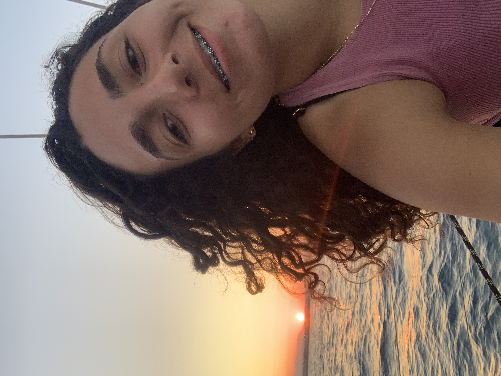

NOUR BICHIOU

Tunis, Tunisia
nour.bichiou@insat.ucar.tn
+216 50937505
Mail Adress
My portfolio
Professional Summary
I am an Aspiring web developer with a background in Industrial and Automation Engineering and a foundational knowledge of HTML. Eager to build a career in web development and DevOps, bringing a strong problem-solving mindset and a passion for learning. Seeking opportunities to contribute to projects that enhance user experience and operational efficiency.
Education
pre Engineering in Industrial computer scienceand Automation
INSAT-National Institute of Applied Sciences and Technology
09/2022-06/2024
Baccalaureate-scientific field
lycee pilote nabeul
09/2018-06/2022
Basic Education Seal Certificate
college pilote de Nabeul
09/2015-06/2018
Skills
- Web Development: HTML, basic CSS
- Version Control: Git (basic knowledge)
- Soft Skills: Problem-solving, communication, adaptability, time management, attention to detail
Volunteer Experience
- LPNYL:
member and workshop manager for charity
(2019-2022)
- INTERACT CLUB HAMMAMET
secretary-general and active member
(2020-2022)
- "INSAT-Events" club
sponsorship manager
(2023-now).
- "Theatro insat"club
media section active member
(2024-now)
- IEEE Insat student branch
active member at CS and RAS branches
(2024-now)